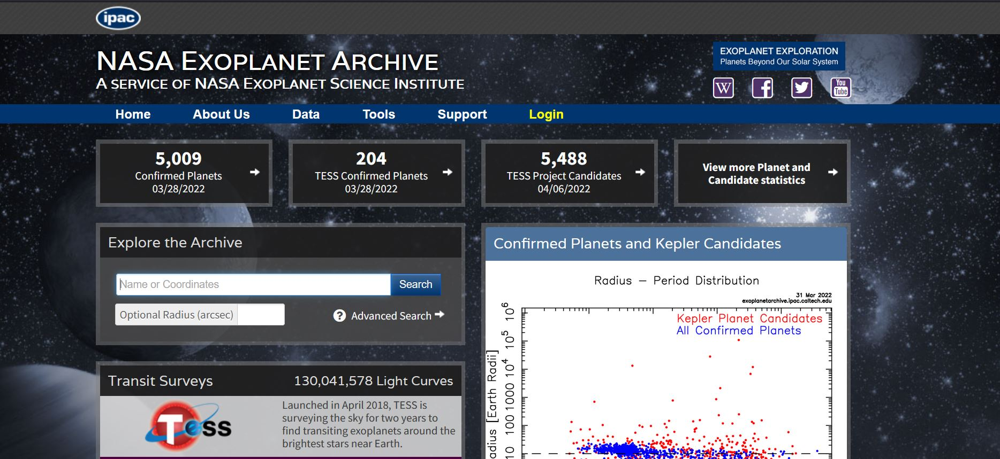

| NASA's Website on Exoplanets 101 | This website is the main exoplanet website made by NASA that contains information like new news and the running count of identified planets. |
| Hubble Website on Exoplanets | This website contains information about the Hubble Telescope and its ability to identify new exoplanets. |
| NASA Exoplanet Archive | This website is the official NASA Exoplanet Archive website that contains information like important data related to identifying exoplanets.  |
| Exoplanets 101 by National Geographic | This video by National Geographic contains basic information about Exoplanets. |